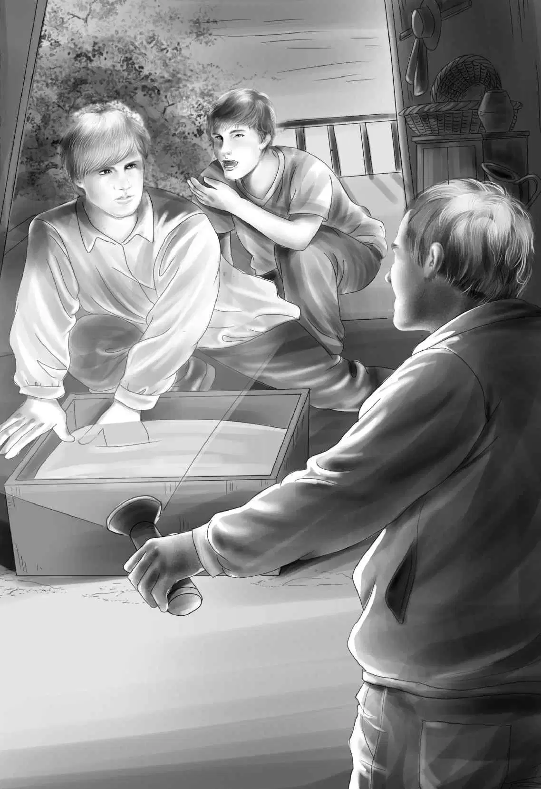

When Henry stepped softly on the dock he thought that the police had not come. When he put his key in the lock he still thought that they had not come. But when he opened the door he heard a soft “Hello.”
To tell the truth， Henry was very glad to hear it. There were two policemen sitting on the floor of the galley with their backs to the wall. Nobody could see them through the windows.
“Come and sit on the floor，” whispered Captain De Rosa. “Sit on my other side. We want to sit nearest the door. We may have to wait a long time.”
“I suppose the men may not come at all，” said Henry.
“Well， maybe not，” said the other policeman. “We’ve pulled the sandbox into the cabin. We’ll let them dig a while before we jump.”
“I think they’ll come tonight，” said Captain De Rosa. “They want to get out of this place fast.”
There was no more talking. Henry could look up and see the stars out of the windows. They were bright because there were no lights and no moon. The minutes ticked away.
The water lapped gently around the boat. The night birds began to chirp and the whippoorwills sang and sang.
After a long time Henry turned his wrist over and looked at his watch. It was nine o’clock. His legs were getting stiff so he sat on one. But the policemen did not move.
Henry thought， “Maybe nobody will come tonight. Maybe they will wait until tomorrow night.”
He had all sorts of ideas. “The movies will be out at ten. Suppose the men wait until ten and they meet the family coming home？That will scare them off. Suppose somebody saw me get on the boat？Suppose the two men are too strong for the police？”
Still the policemen did not move. Once Henry thought he heard a board on the dock creak. But nothing happened. Then all at once the boat moved gently. Henry could feel the policemen getting ready to stand up， but they did not move.
The boat tipped again a very little， as if a person were stepping aboard. Henry heard a key go very softly into the lock. The door of the cabin opened. Henry could see the black shapes of two men. They stepped into the cabin and flashed a weak light toward the sandbox.
One man said crossly， “They’ve moved the sandbox.”
“What of it？” said the other. “It’s the same sandbox. Just get that vase and go！”
Both men knelt down and began to dig in the sand.
“Hold it！” cried Captain De Rosa， jumping to his feet. He turned a bright flashlight full on the two men by the sandbox.
The two men looked up with their mouths open. In an instant the two policemen had handcuffs on both of them. Then Henry was surprised to hear a car drive up.

“Our light was a signal for the car to come，” explained Captain De Rosa. “We have plenty of help now.” And he led the two men off the houseboat with the police lieutenant following.
“I’ll lock up，” said Henry. “My family can sleep here tonight without worrying about anything.”
Henry had another surprise. Commander Williams was sitting in the front seat of the car beside the police driver. “I wanted a good look at those fellows， too，” he said. “Where’s Benny？”
“He said this wasn’t the part he wanted to see. He thinks the best ending will be feeding oats to Dolly and seeing Sam happy again.”
The two handcuffed men did not make any fuss. They knew they were caught. But they began to quarrel when the station wagon started to move.
“I told you it was a dumb thing to take that vase，” one said. “But you wouldn’t listen. We were doing all right getting money from dumb people.”
“That was my idea， too， remember！People will pay anything if you tell them their family is in trouble.”
Henry thought to himself， “Sam and Jeff and the others weren’t in trouble at all. But these two men are. They won’t trick anybody again.”
“Do you want to come to the police station with us？” asked Captain De Rosa， speaking to Henry.
“No， drop me off at the movies. I want to tell my family it’s all over.”
The movie had just ended. The Aldens were the first people to come out.
“Oh， what happened， Henry？” Benny called out.
“Everything is okay，” said Henry， looking at his grandfather. “Walk along to the boat and I’ll tell you all about it.”
Henry told the story from the beginning to the end. Then Benny said， “Oh， Grandfather， tomorrow let’s float back to April Center to see Sam and Dolly！”
“We don’t have to float， Ben，” said Henry. “We can use the motor.”
“Good， we’ll get there fast，” Benny said. The Aldens laughed because that sounded just like Benny.
Henry said， “How about the movie？What was it about？”
Violet looked up at Henry with a smile and said， “I haven’t the slightest idea！”
That night everyone slept well on the houseboat. There was nothing to worry about.
After the houseboat was in order the next morning， Henry and Benny poled the boat toward the dock.
The Aldens bought tickets for April Center at the gate. The first person they saw was not Sam but Jeff. He was sitting up straight in his wagon， waiting for river customers.
Benny called， “Hello， Jeff！We’re back sooner than we said. It didn’t take four or five days. Only two！”
“That’s right，” said Jeff. “I heard all about it last night.” He climbed down and shook hands with Grandfather.
“You heard last night？” asked Henry. “It must have been late.”
“Yes， it was. But I can tell you everyone around here knows it. Even before it was on the radio.”
“I wonder how，” said Henry.
“Well， this is a great place for getting news around，” said Jeff.
“Where’s Sam？” asked Benny.
“He’s down at the main gate. Do you see how much better Molly looks？That’s because of the oats you bought. But now I’ll be able to buy all she needs. She’ll look fine！”
“Good！Let’s go and find Sam，” Benny said.
“Have a ride！” said Jeff. “I’ll be glad to take you.”
The Aldens thanked him and climbed in. Down the street went Molly. She held her head up high. People smiled as the wagon went past them. At last Molly reached the main gate.
“There’s Sam！” said Benny.
Sam looked up. His face was one big smile. He pointed at Dolly. She was eating oats from a bag on her nose.
Sam said， “Dolly’s fine now. And Jeff and I didn’t do anything wrong， and everything is all right！”
Benny looked from Sam to Jeff and from Dolly to Molly. He said， “This is what I wanted to see—Dolly eating oats！And this is the way to end our adventure—with everybody happy！”
Jessie said， “Grandfather， don’t you think our trip is really over， too？”
Mr. Alden said， “Yes， I ought to get back to work.”
“I’m ready to go home，” said Henry.
“Then I’ll telephone Mr. Rivers，” Grandfather said. But it was Mrs. Rivers who answered. She said， “I will meet you myself with my oldest boy. My husband has just gone away for the day.”
The Aldens said good-bye to all their friends and chugged away up the river in the houseboat. They looked for the last time at the green trees and the quiet water. At last they saw Mrs. Rivers and her son standing on the dock， waiting.
“What an awful time you had！” said Mrs. Rivers. “Everybody is talking about your trip and how it was spoiled.”
“Oh， it wasn’t spoiled，” said Benny. “We had a neat time. We always have some excitement. And it all turned out well， even if those men did hide their treasure on our boat. Please don’t tell Mr. Rivers the name of our boat. We’d like to have him see it himself.”
Mrs. Rivers looked at the name and laughed. “No， I won’t tell him，” she said. “You did have some treasure aboard all the time and didn’t know it.”
Mrs. Rivers’ son helped the Aldens take their things from the houseboat and load them in the station wagon. The drive home was a short one， and Watch was waiting for them.
After everything was unpacked， the Aldens sat on the porch. They couldn’t stop talking about the houseboat.
Henry laughed and said， “Remember the day on The James H.Alden when Jessie lost the salt？”
And Jessie said， “Remember the day on The Mrs. McGregor when Ben found out why Dolly was so thin？”
Benny said， “Remember the day on the Nedla Yrneh？And Henry found the fish pole？”
But Violet said， “Oh， I wish we could see Mr. Rivers’ face when he sees the last name for his boat！”
Really， it was too bad that nobody saw Mr. Rivers. He went down alone to look at his houseboat and get it ready for the next customer.
He happened to look at the blue letters on the top and began to laugh. He laughed and laughed and slapped his knee and shook his head.
The houseboat’s name was
Captain Kidd.
“That Benny！” said Mr. Rivers. “Comical.”